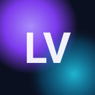

LandVoln is an experimental micro-framework for building static landing pages using custom HTML tags (a tiny DSL) and lightweight content.
<lv-section> and <lv-carousel> keep markup declarative.1. Fork the repository
Keep `framework/` and create your own landing folder next to `lv-demo/`.
2. Copy the demo HTML
Replace text blocks and update socials/CTA links.
3. Pick a theme
Use `theme1` or `theme2`, or create your own theme file with CSS variables.
Progressive enhancement: renders from <template> with JS, highlights only if code.js is included.
Works as a scrollable list without JS, becomes a carousel with arrows + dots with JS.
Use cards inside carousels or sections.
Works for C, C++, C#, and TypeScript (shared lightweight highlighter).